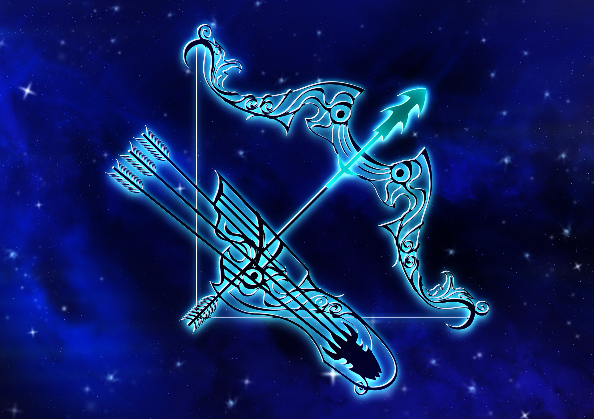

궁수자리

궁수자리(라틴어: Sagittarius 사지타리우스[*])는 황도 12궁의 하나이며, 전갈자리의 동쪽, 염소자리의 서쪽에 있는 별자리이다. 흔히 활을 당기는 켄타우로스로 묘사된다. 동아시아의 별자리로는 두수(斗宿, 남두육성)와 기수(箕宿)에 해당된다. 우리 은하의 중심이 이 별자리 부근에 있다.
신화이야기
그리스 신화에서는, 궁수자리는 전갈자리에 활을 향하는 켄타우로스(라틴어로 켄타우루스), 특히 케이론으로서 묘사된다. 별자리가 된 전갈이 천상에서 소란을 일으켰을 때에 곧 쏘아죽일 수 있도록 궁수자리의 활이 항상 당겨져 있다는 속설이 있는데, 이에 대한 뚜렷한 근거는 없다.